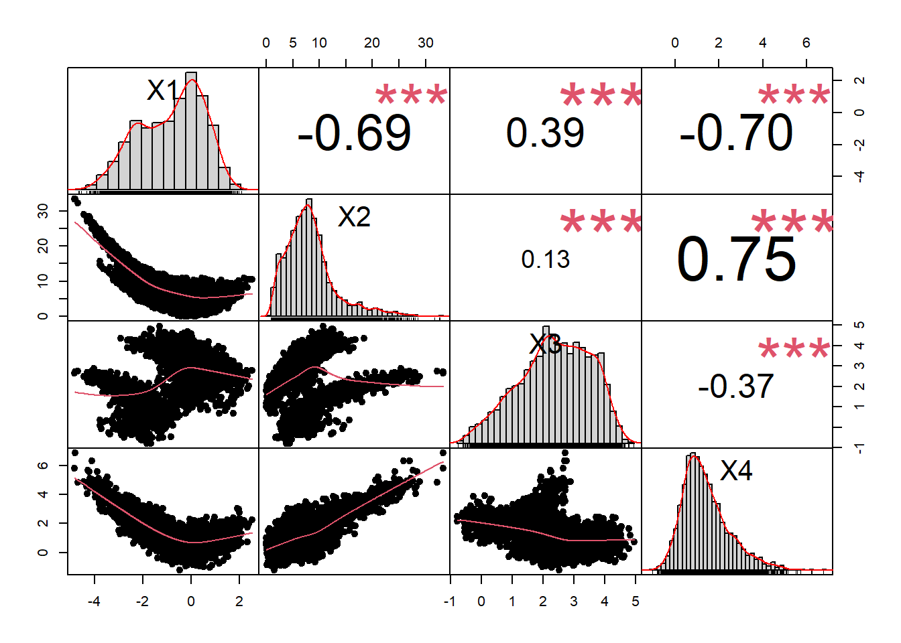
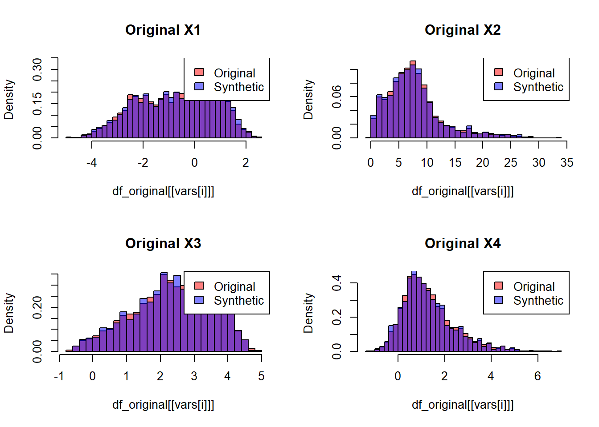
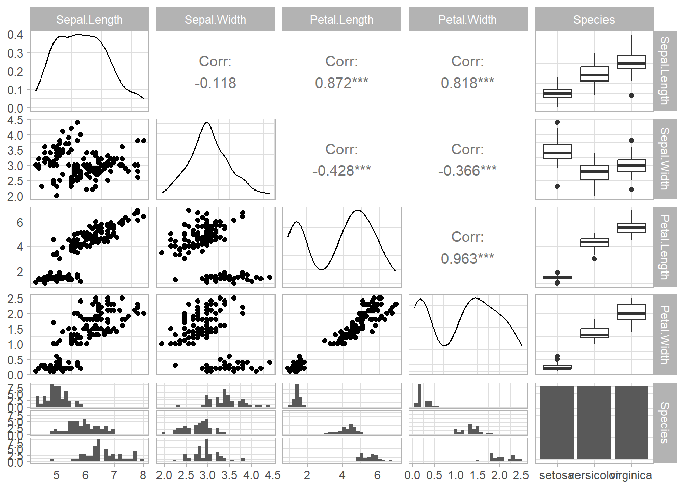
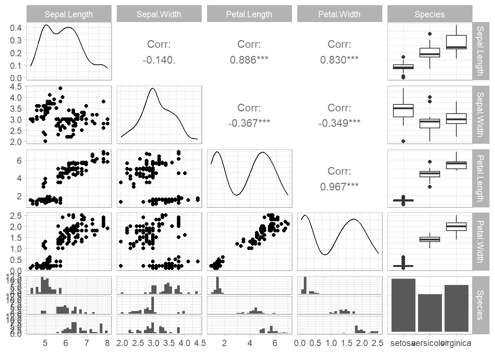

43.3 Application
43.3.1 Original Dataset
- Import libraries
library(copula)
library(moments)
library(PerformanceAnalytics) # For correlation plots
library(ggplot2)
library(dplyr)- Simulate a Complex, Nonlinear, Hierarchical Time Series
Suppose we have:
\(G = 3\) groups (e.g., groups 1, 2, 3)
Each group has \(N = 50\) units (e.g., individuals or devices)
Each unit is measured at \(T = 20\) time points
We’ll create four continuous variables, X1 through X4, each influenced by:
A group-level random effect (different intercept by group)
A unit-level random effect (different intercept by unit)
Time (with some nonlinear relationships, e.g., sine, polynomial)
Nonlinear cross-relationships among X1–X4
This gives us a total of \(3 \times 50 \times 20=3000\) rows in the “original” dataset.
set.seed(123) # For reproducibility
G <- 3 # Number of groups
N <- 50 # Units per group
Tt <- 20 # Time points per unit
# Create a data frame structure
df_list <- list()
for(g in 1:G) {
# Group-level random intercept
group_intercept <- rnorm(1, mean = 0, sd = 1)
for(u in 1:N) {
# Unit-level random intercept
unit_intercept <- rnorm(1, mean = 0, sd = 0.5)
# Simulate time points
time_points <- 1:Tt
# Create some base patterns
X1_base <- group_intercept + unit_intercept +
sin(0.2 * time_points) + # Nonlinear time pattern
rnorm(Tt, mean = 0, sd = 0.2)
# Introduce different relationships for X2, X3, X4
# Some polynomial in time, plus dependence on X1
X2_base <- (X1_base^2) + 0.5 * time_points + rnorm(Tt, 0, 0.3)
X3_base <- 1 + group_intercept - 0.3 * X1_base + log(time_points+1) +
rnorm(Tt, mean = 0, sd = 0.2)
X4_base <- exp(0.1 * X1_base) + 0.2 * (X2_base) - 0.5 * (X3_base) +
rnorm(Tt, mean = 0, sd = 0.5)
df_temp <- data.frame(
group = g,
unit = paste0("G", g, "_U", u),
time = time_points,
X1 = X1_base,
X2 = X2_base,
X3 = X3_base,
X4 = X4_base
)
df_list[[length(df_list) + 1]] <- df_temp
}
}
df_original <- do.call(rbind, df_list)
row.names(df_original) <- NULL
# Inspect the first rows
head(df_original)
#> group unit time X1 X2 X3 X4
#> 1 1 G1_U1 1 -0.165153398 0.2194743 0.9291383 0.3963423
#> 2 1 G1_U1 2 -0.272044371 0.8553408 2.0535411 -0.3918278
#> 3 1 G1_U1 3 -0.085064371 1.3197242 2.0929304 -0.3268864
#> 4 1 G1_U1 4 0.384804697 1.6420667 1.7088991 0.6649585
#> 5 1 G1_U1 5 0.258089835 2.8179465 2.0732799 0.7771992
#> 6 1 G1_U1 6 0.003462448 3.0460239 2.2910647 0.4905209- Explore the Original Dataset
Let’s do some descriptive statistics and look at the correlations among X1–X4.
Because we have repeated measures (time series) nested in units and groups, these correlations are “pooled” across all rows. This is a simplification, but it will let us demonstrate how to do a copula-based synthetic approach.
# Descriptive stats (overall)
summary(df_original[, c("X1", "X2", "X3", "X4")])
#> X1 X2 X3 X4
#> Min. :-4.8316 Min. :-0.02119 Min. :-0.7811 Min. :-1.2191
#> 1st Qu.:-1.8272 1st Qu.: 4.47120 1st Qu.: 1.5865 1st Qu.: 0.5339
#> Median :-0.3883 Median : 7.08316 Median : 2.4366 Median : 1.1073
#> Mean :-0.6520 Mean : 7.76411 Mean : 2.3832 Mean : 1.3118
#> 3rd Qu.: 0.4869 3rd Qu.: 9.65271 3rd Qu.: 3.3120 3rd Qu.: 1.8859
#> Max. : 2.5247 Max. :33.30223 Max. : 4.9642 Max. : 6.8820
# Skewness & Kurtosis
apply(df_original[, c("X1", "X2", "X3", "X4")], 2, skewness)
#> X1 X2 X3 X4
#> -0.3515255 1.3614289 -0.3142704 0.9435834
apply(df_original[, c("X1", "X2", "X3", "X4")], 2, kurtosis)
#> X1 X2 X3 X4
#> -0.7689287 2.6280956 -0.6086295 1.1138128
# Correlation matrix
(cor_mat <- cor(df_original[, c("X1", "X2", "X3", "X4")]))
#> X1 X2 X3 X4
#> X1 1.0000000 -0.6865655 0.3948406 -0.7035793
#> X2 -0.6865655 1.0000000 0.1301602 0.7532715
#> X3 0.3948406 0.1301602 1.0000000 -0.3660620
#> X4 -0.7035793 0.7532715 -0.3660620 1.0000000
chart.Correlation(df_original[, c("X1", "X2", "X3", "X4")],
histogram = TRUE, pch = 19)
- Convert to Pseudo-Observations for Copula Fitting
Copulas need variables in \([0,1]\) space, so we use the empirical CDF (“probability integral transform”) on each variable.
Important: We have discrete variables like
group, or ID-like columns such asunit. For the synthetic generation of group/unit/time, we have multiple strategies:
Model them as random: e.g., re-sample
group,unit,timefrom the original distribution.Treat them as continuous in a copula (not recommended for true IDs).
Do a hierarchical approach: fit a separate copula for each group or each time slice (advanced).
For simplicity, we’ll:
Re-sample
groupandtimefrom their original distributions (like “bootstrapping”).Use a multivariate copula only for
X1–X4.
# Extract the numeric columns we want to transform
original_data <- df_original[, c("X1","X2","X3","X4")]
# Convert each to uniform [0,1] by empirical CDF
u_data <- pobs(as.matrix(original_data))
# Check ranges (should be between 0 and 1)
apply(u_data, 2, range)
#> X1 X2 X3 X4
#> [1,] 0.0003332223 0.0003332223 0.0003332223 0.0003332223
#> [2,] 0.9996667777 0.9996667777 0.9996667777 0.9996667777- Fit a Copula Model
We’ll fit a Gaussian copula (you could try t-copula or vine copulas for heavier tails or more complex dependencies). We use maximum likelihood estimation:
# Define an unstructured Gaussian copula
gaussCop <- normalCopula(dim = ncol(u_data), dispstr = "un")
# Fit to the pseudo-observations
fit_gauss <- fitCopula(gaussCop, data = u_data, method = "ml")
summary(fit_gauss)
#> Call: fitCopula(gaussCop, data = u_data, method = "ml")
#> Fit based on "maximum likelihood" and 3000 4-dimensional observations.
#> Normal copula, dim. d = 4
#> Estimate Std. Error
#> rho.1 -0.5746 0.010
#> rho.2 0.3024 0.014
#> rho.3 -0.5762 0.010
#> rho.4 0.2188 0.013
#> rho.5 0.6477 0.008
#> rho.6 -0.3562 0.012
#> The maximized loglikelihood is 2885
#> Optimization converged
#> Number of loglikelihood evaluations:
#> function gradient
#> 68 14Check the estimated correlation matrix within the copula. This should reflect the dependency among X1–X4 (though not time, group, or unit).
- Generate Synthetic Data
- Synthetic X1–X4
- Sample from the fitted copula to get synthetic \([0,1]\) values.
- Invert them via the original empirical distributions (quantiles).
n_synth <- nrow(df_original) # same size as original
# Sample from the copula
u_synth <- rCopula(n_synth, fit_gauss@copula)
# Convert from [0,1] -> real scale by matching original distribution
synth_X <- data.frame(
X1_synth = quantile(original_data$X1, probs = u_synth[, 1],
type = 8),
X2_synth = quantile(original_data$X2, probs = u_synth[, 2],
type = 8),
X3_synth = quantile(original_data$X3, probs = u_synth[, 3],
type = 8),
X4_synth = quantile(original_data$X4, probs = u_synth[, 4],
type = 8)
)
head(synth_X)
#> X1_synth X2_synth X3_synth X4_synth
#> 68.93791982% 0.2965446 3.488621 2.0876565 0.9336342
#> 40.75838264% -0.8903883 5.341148 3.4134562 0.4857101
#> 80.51755107% 0.6841892 2.536933 0.5329199 1.3494999
#> 29.87601496% -1.5123574 8.127288 0.4861639 3.2120501
#> 68.75449744% 0.2855353 3.219903 2.1439338 -0.3848253
#> 35.73763642% -1.1651872 5.717179 2.7372298 0.6252287- Synthetic Group, Unit, and Time
A simple approach is to:
Re-sample “group” with the same probabilities as the original distribution.
Re-sample “unit” within each group or treat it as purely random labels (depending on your needs).
Re-sample “time” from the original distribution or replicate the same time points.
Below, we do a simplistic approach: for each row, pick a random row from the original data to copy group, unit, and time. This preserves the real distribution of group/time pairs and the frequency of each unit. (But it does not preserve the original time-series ordering or autoregressive structure!)
indices <-
sample(seq_len(nrow(df_original)),
size = n_synth,
replace = TRUE)
synth_meta <- df_original[indices, c("group", "unit", "time")]
# Combine the meta-info with the synthetic X's
df_synth <- cbind(synth_meta, synth_X)
head(df_synth)
#> group unit time X1_synth X2_synth X3_synth X4_synth
#> 1029 2 G2_U2 9 0.2965446 3.488621 2.0876565 0.9336342
#> 2279 3 G3_U14 19 -0.8903883 5.341148 3.4134562 0.4857101
#> 1885 2 G2_U45 5 0.6841892 2.536933 0.5329199 1.3494999
#> 2251 3 G3_U13 11 -1.5123574 8.127288 0.4861639 3.2120501
#> 1160 2 G2_U8 20 0.2855353 3.219903 2.1439338 -0.3848253
#> 2222 3 G3_U12 2 -1.1651872 5.717179 2.7372298 0.6252287If you need to preserve the exact time-ordering or real “per-unit” correlation across time, you’d need a more advanced approach (e.g., separate copula by unit or a hierarchical time-series model).
- Validate the Synthetic Data
- Compare Descriptive Statistics
# Original
orig_means <- colMeans(df_original[, c("X1", "X2", "X3", "X4")])
orig_sds <- apply(df_original[, c("X1", "X2", "X3", "X4")], 2, sd)
orig_skew <-
apply(df_original[, c("X1", "X2", "X3", "X4")], 2, skewness)
orig_kurt <-
apply(df_original[, c("X1", "X2", "X3", "X4")], 2, kurtosis)
# Synthetic
synth_means <-
colMeans(df_synth[, c("X1_synth", "X2_synth", "X3_synth", "X4_synth")])
synth_sds <-
apply(df_synth[, c("X1_synth", "X2_synth", "X3_synth", "X4_synth")], 2, sd)
synth_skew <-
apply(df_synth[, c("X1_synth", "X2_synth", "X3_synth", "X4_synth")], 2, skewness)
synth_kurt <-
apply(df_synth[, c("X1_synth", "X2_synth", "X3_synth", "X4_synth")], 2, kurtosis)
cat(
"### Means ###\nOriginal:",
round(orig_means, 3),
"\nSynthetic:",
round(synth_means, 3),
"\n\n"
)
#> ### Means ###
#> Original: -0.652 7.764 2.383 1.312
#> Synthetic: -0.642 7.741 2.372 1.287
cat(
"### SDs ###\nOriginal:",
round(orig_sds, 3),
"\nSynthetic:",
round(synth_sds, 3),
"\n\n"
)
#> ### SDs ###
#> Original: 1.448 4.937 1.16 1.102
#> Synthetic: 1.449 5.046 1.159 1.102
cat(
"### Skewness ###\nOriginal:",
round(orig_skew, 3),
"\nSynthetic:",
round(synth_skew, 3),
"\n\n"
)
#> ### Skewness ###
#> Original: -0.352 1.361 -0.314 0.944
#> Synthetic: -0.349 1.353 -0.317 1.017
cat(
"### Kurtosis ###\nOriginal:",
round(orig_kurt, 3),
"\nSynthetic:",
round(synth_kurt, 3),
"\n\n"
)
#> ### Kurtosis ###
#> Original: -0.769 2.628 -0.609 1.114
#> Synthetic: -0.744 2.465 -0.619 1.381- Compare Correlation Matrices
cat("Original correlation:\n")
#> Original correlation:
round(cor(df_original[, c("X1", "X2", "X3", "X4")]), 3)
#> X1 X2 X3 X4
#> X1 1.000 -0.687 0.395 -0.704
#> X2 -0.687 1.000 0.130 0.753
#> X3 0.395 0.130 1.000 -0.366
#> X4 -0.704 0.753 -0.366 1.000
cat("\nSynthetic correlation:\n")
#>
#> Synthetic correlation:
round(cor(df_synth[, c("X1_synth", "X2_synth", "X3_synth", "X4_synth")]), 3)
#> X1_synth X2_synth X3_synth X4_synth
#> X1_synth 1.000 -0.562 0.288 -0.565
#> X2_synth -0.562 1.000 0.195 0.636
#> X3_synth 0.288 0.195 1.000 -0.346
#> X4_synth -0.565 0.636 -0.346 1.000- Visual Comparison of Distributions
par(mfrow = c(2, 2))
vars <- c("X1", "X2", "X3", "X4")
for (i in seq_along(vars)) {
hist(
df_original[[vars[i]]],
probability = TRUE,
breaks = 30,
main = paste("Original", vars[i]),
col = rgb(1, 0, 0, 0.5)
)
hist(
df_synth[[paste0(vars[i], "_synth")]],
probability = TRUE,
breaks = 30,
main = paste("Synthetic", vars[i]),
col = rgb(0, 0, 1, 0.5),
add = TRUE
)
legend(
"topright",
legend = c("Original", "Synthetic"),
fill = c(rgb(1, 0, 0, 0.5), rgb(0, 0, 1, 0.5))
)
}
- Correlation Plot for Synthetic Data
chart.Correlation(df_synth[, c("X1_synth", "X2_synth", "X3_synth", "X4_synth")],
histogram = TRUE, pch = 19)
Indistinguishability: If the synthetic summary statistics (means, variances, skewness, kurtosis) and correlation structure match closely, the synthetic data is often “indistinguishable” from the original for many analytical purposes.
Hierarchical / Time-Series: True hierarchical time-series replication (i.e., preserving each unit’s time autocorrelation and group structure) may require more advanced methods, such as:
Hierarchical copulas or vine copulas over time slices.
Mixed-effects / random-effects modeling (e.g., for group and unit) plus a copula for residuals.
Deep generative approaches (e.g., TimeGAN) for strong temporal dynamics, currently more common in Python.
Categorical Variables: For strictly categorical variables (e.g., group, unit ID), you can:
Fit separate copulas within each group.
Convert categories to numeric in a naive way (not recommended for actual IDs) or use specialized discrete copulas.
Privacy Considerations: Even if data is synthetic, do check that it doesn’t inadvertently leak private information (e.g., via memorizing outliers). Techniques like differential privacy or post-hoc checks might be required.
43.3.2 Restricted Dataset
- Generate the “Original” Complex Dataset
We’ll simulate a hierarchical time-series with:
\(G = 3\) groups
\(N = 50\) units per group
\(T = 20\) time points per unit
Nonlinear relationships between
X1,X2,X3,X4.
# Step 1: Generate "df_original" (what the partner owns internally)
set.seed(123) # For reproducibility
G <- 3 # Number of groups
N <- 50 # Units per group
Tt <- 20 # Time points per unit
df_list <- list()
for(g in 1:G) {
# Group-level random intercept
group_intercept <- rnorm(1, mean = 0, sd = 1)
for(u in 1:N) {
# Unit-level random intercept
unit_intercept <- rnorm(1, mean = 0, sd = 0.5)
# Simulate time points
time_points <- 1:Tt
# Create some base patterns (X1)
X1_base <- group_intercept + unit_intercept +
sin(0.2 * time_points) + # Nonlinear time pattern
rnorm(Tt, mean = 0, sd = 0.2)
# X2 depends on polynomial in time, plus dependence on X1
X2_base <- (X1_base^2) + 0.5 * time_points + rnorm(Tt, 0, 0.3)
# X3 depends on group intercept, negative correlation with X1, and log(time)
X3_base <- 1 + group_intercept - 0.3 * X1_base + log(time_points + 1) +
rnorm(Tt, mean = 0, sd = 0.2)
# X4 depends on X1, X2, X3 in a more complex, nonlinear form
X4_base <- exp(0.1 * X1_base) + 0.2 * X2_base - 0.5 * X3_base +
rnorm(Tt, mean = 0, sd = 0.5)
df_temp <- data.frame(
group = g,
unit = paste0("G", g, "_U", u),
time = time_points,
X1 = X1_base,
X2 = X2_base,
X3 = X3_base,
X4 = X4_base
)
df_list[[length(df_list) + 1]] <- df_temp
}
}
df_original <- do.call(rbind, df_list)
row.names(df_original) <- NULL
# Inspect the first rows (just for illustration)
head(df_original)
#> group unit time X1 X2 X3 X4
#> 1 1 G1_U1 1 -0.165153398 0.2194743 0.9291383 0.3963423
#> 2 1 G1_U1 2 -0.272044371 0.8553408 2.0535411 -0.3918278
#> 3 1 G1_U1 3 -0.085064371 1.3197242 2.0929304 -0.3268864
#> 4 1 G1_U1 4 0.384804697 1.6420667 1.7088991 0.6649585
#> 5 1 G1_U1 5 0.258089835 2.8179465 2.0732799 0.7771992
#> 6 1 G1_U1 6 0.003462448 3.0460239 2.2910647 0.4905209At this point, imagine df_original lives only on the partner’s server and cannot be exported in its raw form.
- Manually Collect Summary Statistics (Inside Secure Server)
Within the secure environment, you would run commands to get:
Means, standard deviations for each variable
Correlation matrix
Group distribution info (how many groups, units, etc.)
Any other relevant stats (min, max, skewness, kurtosis, etc.) you might use
Below, we’ll do that directly in code—but in reality, you would just write these numbers down or save them in a doc, not export the raw data.
# Step 2: Summaries from "df_original" (pretend we can't take the actual df out)
library(dplyr)
# For demonstration, we'll compute them here:
stats_summary <- df_original %>%
summarise(
mean_X1 = mean(X1),
mean_X2 = mean(X2),
mean_X3 = mean(X3),
mean_X4 = mean(X4),
sd_X1 = sd(X1),
sd_X2 = sd(X2),
sd_X3 = sd(X3),
sd_X4 = sd(X4)
)
# Extract the correlation matrix among (X1, X2, X3, X4)
cor_matrix <- cor(df_original[, c("X1","X2","X3","X4")])
# Also note the group info
unique_groups <- unique(df_original$group)
group_sizes <- table(df_original$group)
N_groups <- length(unique_groups)
unit_example <- length(unique(df_original$unit[df_original$group == 1]))
time_points <- length(unique(df_original$time[df_original$group == 1 & df_original$unit == "G1_U1"]))
# Print them out as if we wrote them down
stats_summary
#> mean_X1 mean_X2 mean_X3 mean_X4 sd_X1 sd_X2 sd_X3 sd_X4
#> 1 -0.651988 7.764111 2.383214 1.311789 1.448297 4.937284 1.160375 1.102264
cor_matrix
#> X1 X2 X3 X4
#> X1 1.0000000 -0.6865655 0.3948406 -0.7035793
#> X2 -0.6865655 1.0000000 0.1301602 0.7532715
#> X3 0.3948406 0.1301602 1.0000000 -0.3660620
#> X4 -0.7035793 0.7532715 -0.3660620 1.0000000
group_sizes
#>
#> 1 2 3
#> 1000 1000 1000
N_groups
#> [1] 3
unit_example
#> [1] 50
time_points
#> [1] 20Example Output (numbers will vary):
Means, SDs of each variable
4×4 correlation matrix
group_sizes: each group has 50×20 = 1000 rowsN_groups: 3
Simulating What We “Take Out”
Pretend these are the only data you’re allowed to copy into your local machine:
# (Pretend these are typed or copy-pasted from the secure environment)
# Means and SDs:
means <- c(stats_summary$mean_X1, stats_summary$mean_X2,
stats_summary$mean_X3, stats_summary$mean_X4)
sds <- c(stats_summary$sd_X1, stats_summary$sd_X2,
stats_summary$sd_X3, stats_summary$sd_X4)
# Correlation matrix:
R <- cor_matrix
# Hierarchical structure info:
G_outside <- N_groups # 3
N_outside <- unit_example # 50
Tt_outside <- time_points # 20- Reconstruct Covariance Matrix and Distribution (Outside)
Outside, you now have:
A mean vector for
(X1, X2, X3, X4)Standard deviations for each
A correlation matrix \(R\)
Basic knowledge: 3 groups, 50 units each, 20 time points each (or however the real data is structured)
Build the covariance \(\Sigma\) from the correlation matrix and SDs:
# Step 3: Covariance matrix = diag(SDs) %*% R %*% diag(SDs)
Sigma <- diag(sds) %*% R %*% diag(sds)
Sigma
#> [,1] [,2] [,3] [,4]
#> [1,] 2.0975651 -4.9093928 0.6635565 -1.1231984
#> [2,] -4.9093928 24.3767734 0.7457009 4.0994482
#> [3,] 0.6635565 0.7457009 1.3464702 -0.4682079
#> [4,] -1.1231984 4.0994482 -0.4682079 1.2149866- Generate a Synthetic Dataset Matching Those Stats
We’ll replicate the same hierarchical shape: 3 groups, 50 units, 20 time points. But we’ll fill in (X1, X2, X3, X4) by sampling from multivariate normal with (means, Sigma).
In practice, you might want to add back random intercepts for groups or time trends if your manual stats include that. However, if all you have are overall means, SDs, and a correlation matrix, the simplest approach is to assume a single global distribution for X1–X4.
library(MASS)
set.seed(999) # Synthetic data seed (different from original)
df_synth <- data.frame()
for(g in 1:G_outside) {
for(u in 1:N_outside) {
for(t in 1:Tt_outside) {
# Draw one sample from the 4D normal
X_vector <- mvrnorm(n = 1, mu = means, Sigma = Sigma)
df_temp <- data.frame(
group = g,
unit = paste0("G", g, "_U", u),
time = t,
X1 = X_vector[1],
X2 = X_vector[2],
X3 = X_vector[3],
X4 = X_vector[4]
)
df_synth <- rbind(df_synth, df_temp)
}
}
}
# Check the first rows of the synthetic dataset
head(df_synth)
#> group unit time X1 X2 X3 X4
#> 1 1 G1_U1 1 0.55555434 9.484499 3.729036 1.3156911
#> 2 1 G1_U1 2 -1.33012636 9.275848 3.202148 0.1467821
#> 3 1 G1_U1 3 -0.02332833 12.858857 3.425945 2.1621458
#> 4 1 G1_U1 4 0.84430687 3.253564 1.536901 0.5493251
#> 5 1 G1_U1 5 0.04440973 7.617650 1.552945 1.0185252
#> 6 1 G1_U1 6 -2.70087059 13.626038 1.959473 2.6224373At this point, df_synth is a dataset that has the same shape (3 groups × 50 units × 20 time points = 3000 rows) and is drawn from the same approximate distribution (matching the partner’s means, SDs, correlation matrix).
Alternatively, if the goal is to capture even skewness and kurtosis, it’s a bit more complex.
# Load required libraries
library(MASS) # For multivariate normal correlation structure
library(sn) # For skewed normal distribution
# Step 1: Define Structure
num_groups <- 10 # Number of groups
num_timepoints <- 50 # Time series length per group
total_samples <- num_groups * num_timepoints # Total data points
# Define statistical properties for each group
set.seed(123) # For reproducibility
group_means <- rnorm(num_groups, mean=50, sd=10) # Each group has a different mean
group_variances <- runif(num_groups, 50, 150) # Random variance per group
group_skewness <- runif(num_groups, -1, 2) # Skewness for each group
# group_kurtosis <- runif(num_groups, 3, 6) # Excess kurtosis for each group
# Define AR(3) autocorrelation coefficients
phi <- c(0.5, 0.3, 0.2) # AR(3) coefficients (must sum to < 1 for stationarity)
p <- length(phi) # Order of the AR process
# Define correlation matrix for groups (cross-sectional correlation)
group_corr_matrix <- matrix(0.5, nrow=num_groups, ncol=num_groups) # Moderate correlation
diag(group_corr_matrix) <- 1 # Set diagonal to 1 for perfect self-correlation
# Cholesky decomposition for group-level correlation
chol_decomp <- chol(group_corr_matrix)
# Step 2: Generate Hierarchical Time Series Data
data_list <- list()
for (g in 1:num_groups) {
# Generate base time series (AR(p) process)
ts_data <- numeric(num_timepoints)
# Initialize first 'p' values randomly
ts_data[1:p] <- rnorm(p, mean=group_means[g], sd=sqrt(group_variances[g]))
for (t in (p+1):num_timepoints) {
# AR(p) process with multiple past values
ts_data[t] <- sum(phi * ts_data[(t-p):(t-1)]) +
rnorm(1, mean=0, sd=sqrt(group_variances[g] * (1 - sum(phi^2))))
}
# Add skewness using skewed normal distribution
ts_data <- rsn(num_timepoints, xi=mean(ts_data), omega=sd(ts_data), alpha=group_skewness[g])
# Store data in list
data_list[[g]] <- data.frame(
Group = g,
Time = 1:num_timepoints,
Value = ts_data
)
}
# Combine all group data into a single DataFrame
df <- do.call(rbind, data_list)
# Step 3: Apply Cross-Group Correlation
# Reshape the dataset for correlation application
wide_df <- reshape(df, idvar="Time", timevar="Group", direction="wide")
# Apply correlation across groups at each time step
for (t in 1:num_timepoints) {
wide_df[t, -1] <- as.numeric(as.matrix(wide_df[t, -1]) %*% chol_decomp)
}
# Convert back to long format correctly
long_df <- reshape(wide_df,
varying=colnames(wide_df)[-1], # Select all group columns
v.names="Value",
idvar="Time",
timevar="Group",
times=1:num_groups,
direction="long")
# Ensure no unexpected columns
long_df <- long_df[, c("Time", "Group", "Value")]
# Display first few rows
head(long_df)- Evaluate & Compare
In reality, you might do this comparison inside the partner’s environment to confirm your synthetic data is a close match. For demonstration, we’ll just compare directly here.
# Step 5: Evaluate
# A) Check Means & SDs
synth_means <- colMeans(df_synth[, c("X1","X2","X3","X4")])
synth_sds <- apply(df_synth[, c("X1","X2","X3","X4")], 2, sd)
cat("Original (Collected) Means:\n", round(means, 3), "\n")
#> Original (Collected) Means:
#> -0.652 7.764 2.383 1.312
cat("Synthetic Means:\n", round(synth_means, 3), "\n\n")
#> Synthetic Means:
#> -0.627 7.882 2.441 1.315
cat("Original (Collected) SDs:\n", round(sds, 3), "\n")
#> Original (Collected) SDs:
#> 1.448 4.937 1.16 1.102
cat("Synthetic SDs:\n", round(synth_sds, 3), "\n\n")
#> Synthetic SDs:
#> 1.467 4.939 1.159 1.103
# B) Check Correlation
synth_cor <- cor(df_synth[, c("X1","X2","X3","X4")])
cat("Original (Collected) Correlation Matrix:\n")
#> Original (Collected) Correlation Matrix:
print(round(R, 3))
#> X1 X2 X3 X4
#> X1 1.000 -0.687 0.395 -0.704
#> X2 -0.687 1.000 0.130 0.753
#> X3 0.395 0.130 1.000 -0.366
#> X4 -0.704 0.753 -0.366 1.000
cat("\nSynthetic Correlation Matrix:\n")
#>
#> Synthetic Correlation Matrix:
print(round(synth_cor, 3))
#> X1 X2 X3 X4
#> X1 1.000 -0.693 0.402 -0.704
#> X2 -0.693 1.000 0.114 0.756
#> X3 0.402 0.114 1.000 -0.376
#> X4 -0.704 0.756 -0.376 1.000You should see that the synthetic dataset’s means, SDs, and correlation matrix are very close to the manually collected values from df_original.
# Histograms or density plots
par(mfrow = c(2,2))
hist(df_synth$X1, main="X1 Synthetic", col="lightblue", breaks=30)
hist(df_synth$X2, main="X2 Synthetic", col="lightblue", breaks=30)
hist(df_synth$X3, main="X3 Synthetic", col="lightblue", breaks=30)
hist(df_synth$X4, main="X4 Synthetic", col="lightblue", breaks=30)
# Pairwise correlation scatterplots
library(PerformanceAnalytics)
chart.Correlation(df_synth[, c("X1","X2","X3","X4")],
histogram=TRUE, pch=19)
43.3.3 Synthpop
The easiest way to create synthetic data is to use the synthpop package.
library(synthpop)
library(tidyverse)
library(performance)
# library(effectsize)
# library(see)
# library(patchwork)
# library(knitr)
# library(kableExtra)
head(iris)
#> Sepal.Length Sepal.Width Petal.Length Petal.Width Species
#> 1 5.1 3.5 1.4 0.2 setosa
#> 2 4.9 3.0 1.4 0.2 setosa
#> 3 4.7 3.2 1.3 0.2 setosa
#> 4 4.6 3.1 1.5 0.2 setosa
#> 5 5.0 3.6 1.4 0.2 setosa
#> 6 5.4 3.9 1.7 0.4 setosa
synthpop::codebook.syn(iris)
#> $tab
#> variable class nmiss perctmiss ndistinct
#> 1 Sepal.Length numeric 0 0 35
#> 2 Sepal.Width numeric 0 0 23
#> 3 Petal.Length numeric 0 0 43
#> 4 Petal.Width numeric 0 0 22
#> 5 Species factor 0 0 3
#> details
#> 1 Range: 4.3 - 7.9
#> 2 Range: 2 - 4.4
#> 3 Range: 1 - 6.9
#> 4 Range: 0.1 - 2.5
#> 5 'setosa' 'versicolor' 'virginica'
#>
#> $labs
#> NULL
syn_df <- syn(iris, seed = 3)
#>
#> Synthesis
#> -----------
#> Sepal.Length Sepal.Width Petal.Length Petal.Width Species
# check for replciated uniques
replicated.uniques(syn_df, iris)
#> Uniques and replicated uniques for 1 synthesised data set(s)
#>
#> from keys: Sepal.Length Sepal.Width Petal.Length Petal.Width Species
#>
#> Number from total %
#> Original 148 150 98.67
#> Synthetic 137 150 91.33
#> Synthetic uniques in original 17 150 11.33
#> Replicated uniques 17 150 11.33
#> To view possible exclusions from synthesised data set(s) check components
#> synU.rm (suggested for low-fidelity synthesis) or repU.rm (for high fidelity)
# remove replicated uniques and adds a FAKE_DATA label
# (in case a person can see his or own data in
# the replicated data by chance)
syn_df_sdc <- sdc(syn_df, iris,
label = "FAKE_DATA",
rm.replicated.uniques = T)
#> no. of replicated uniques removed: 17

lm_ori <- lm(Sepal.Length ~ Sepal.Width + Petal.Length , data = iris)
# performance::check_model(lm_ori)
summary(lm_ori)
#>
#> Call:
#> lm(formula = Sepal.Length ~ Sepal.Width + Petal.Length, data = iris)
#>
#> Residuals:
#> Min 1Q Median 3Q Max
#> -0.96159 -0.23489 0.00077 0.21453 0.78557
#>
#> Coefficients:
#> Estimate Std. Error t value Pr(>|t|)
#> (Intercept) 2.24914 0.24797 9.07 7.04e-16 ***
#> Sepal.Width 0.59552 0.06933 8.59 1.16e-14 ***
#> Petal.Length 0.47192 0.01712 27.57 < 2e-16 ***
#> ---
#> Signif. codes: 0 '***' 0.001 '**' 0.01 '*' 0.05 '.' 0.1 ' ' 1
#>
#> Residual standard error: 0.3333 on 147 degrees of freedom
#> Multiple R-squared: 0.8402, Adjusted R-squared: 0.838
#> F-statistic: 386.4 on 2 and 147 DF, p-value: < 2.2e-16
lm_syn <- lm(Sepal.Length ~ Sepal.Width + Petal.Length , data = syn_df$syn)
# performance::check_model(lm_syn)
summary(lm_syn)
#>
#> Call:
#> lm(formula = Sepal.Length ~ Sepal.Width + Petal.Length, data = syn_df$syn)
#>
#> Residuals:
#> Min 1Q Median 3Q Max
#> -0.79165 -0.22790 -0.01448 0.15893 1.13360
#>
#> Coefficients:
#> Estimate Std. Error t value Pr(>|t|)
#> (Intercept) 2.96449 0.24538 12.081 < 2e-16 ***
#> Sepal.Width 0.39214 0.06816 5.754 4.9e-08 ***
#> Petal.Length 0.45267 0.01743 25.974 < 2e-16 ***
#> ---
#> Signif. codes: 0 '***' 0.001 '**' 0.01 '*' 0.05 '.' 0.1 ' ' 1
#>
#> Residual standard error: 0.3658 on 147 degrees of freedom
#> Multiple R-squared: 0.8246, Adjusted R-squared: 0.8222
#> F-statistic: 345.6 on 2 and 147 DF, p-value: < 2.2e-16Open data can be assessed for its utility in two distinct ways:
General Utility: This refers to the broad resemblances within the dataset, allowing for preliminary data exploration.
Specific Utility: This focuses on the comparability of models derived from synthetic and original datasets, emphasizing analytical reproducibility.
For General utility
Specific utility
# just like regular lm, but for synthetic data
lm_syn <- lm.synds(Sepal.Length ~ Sepal.Width + Petal.Length , data = syn_df)
compare(lm_syn, iris)
#>
#> Call used to fit models to the data:
#> lm.synds(formula = Sepal.Length ~ Sepal.Width + Petal.Length,
#> data = syn_df)
#>
#> Differences between results based on synthetic and observed data:
#> Synthetic Observed Diff Std. coef diff CI overlap
#> (Intercept) 2.9644900 2.2491402 0.71534988 2.884829 0.2640608
#> Sepal.Width 0.3921429 0.5955247 -0.20338187 -2.933611 0.2516161
#> Petal.Length 0.4526695 0.4719200 -0.01925058 -1.124602 0.7131064
#>
#> Measures for one synthesis and 3 coefficients
#> Mean confidence interval overlap: 0.4095944
#> Mean absolute std. coef diff: 2.314347
#>
#> Mahalanobis distance ratio for lack-of-fit (target 1.0): 3.08
#> Lack-of-fit test: 9.23442; p-value 0.0263 for test that synthesis model is
#> compatible with a chi-squared test with 3 degrees of freedom.
#>
#> Confidence interval plot:
You basically want your lack-of-fit test to be non-significant.